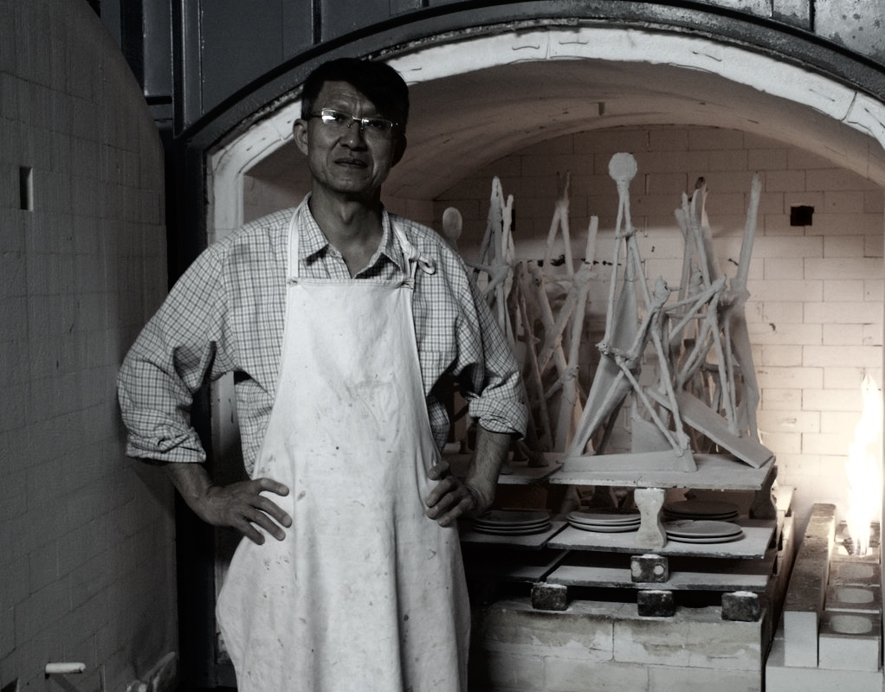

作家簡介
About the Artist林振龍 1955 年生。1973 年進入王修功主持的漢唐陶藝廠習陶，1978 年拜「現代陶藝之父」林葆家教授為師，1979 年於新北市土城成立瓷揚窯工作室。字二谷，取其山之低、向山仰望之意，因此自署「敬山陶舍」。
1989 年起陸續舉辦「燒陶燒心」、「擁抱我土」、「壺外之音」、「大地陶情」、「空間·釉彩」、「形色大地」、「容器」、「陶情壺藝」、「石理陶生」等系列個展。作品曾應邀至國立歷史博物館、臺北市立美術館、國立臺灣美術館、鶯歌陶瓷博物館、中國浙江美術館、美國紐約市立大學美術館等地展出。
林振龍的創作結合西方極簡設計理念與東方釉色表現。從現代形式主義出發，利用幾何塊狀結構，搭建虛實掩映的視覺美感，並將青瓷、銅紅、鈞釉與白釉等東方傳統釉色的特有質感，再現於極簡幾何作品上，在西方理性結構中展現東方溫潤之美。
曾任
德霖技術學院兼任專業副教授／中國文化大學推廣教育講師／鶯歌陶瓷博物館陶瓷學院青瓷釉調配與窯燒教師／國立台灣工藝研發中心研習教師／國立科學工藝博物館蒐藏委員／高雄市立美術館評審暨典藏委員／鶯歌陶瓷博物館評審暨典藏委員／南投縣文化局玉山獎評審
